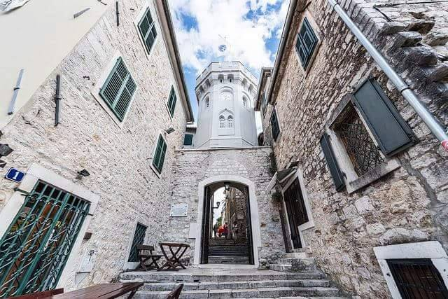
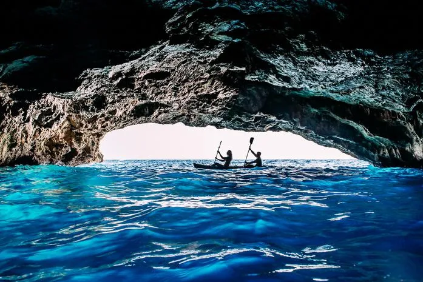

Tražite savršeno mjesto za odmor? Igalo i Herceg Novi u Crnoj Gori nude rijetku kombinaciju koja se teško nalazi na Mediteranu: lekovite blato-plaže, 2.700 godina istorije, kristalno čisto Jadransko more, odlična hrana — i cijene koje ne bole. Evo 10 razloga zašto bi Herceg Novi trebao biti na vrhu vaše liste.
Plaže za svačiji ukus
Opština Herceg Novi ima 62 registrovane plaže duž 25 km obale — dovoljno raznovrsno da zadovolji svakog gosta. Tražite pješčanu plažu i plitku vodu idealnu za djecu? Idite na Blatnu plažu u Igalu. Volite organizovanu plažu s vodenim sportovima? Raffaello (Topla) je lokalni favorit. Žudite za skrivenom uvalama s hladovinom maslina? Ukrcajte se na brod prema Žanjicama na poluostrvu Luštica.
Topla voda Jadranskog mora dostiže 22–26 °C ljeti, a kupališna sezona traje i do pet mjeseci — od maja do septembra.
Savršena mediteranska klima
Igalo ima klasičnu mediteransku klimu — topla, suva ljeta i blage, vlažne zime. Jul i avgust su najtopliji mjeseci s prosječnom temperaturom vazduha od 25–30 °C i oko 10,7 sunčanih sati dnevno. Noći se rijetko spuštaju ispod 20 °C — idealno za večere uz more.
Ako preferirate manje gužve i svježije temperature, pred- i posezoni (maj–juni i septembar–oktobar) nude 15–22 °C, toplo more i znatno mirniji ambijent. Zima je blaga na 10–12 °C — savršena za šetnju bedemima starog grada.
| Sezona | Vazduh | More | Napomena |
|---|---|---|---|
| Ljeto (jul–avg) | 25–30 °C | 24–26 °C | Vrhunac sezone, 10,7 h sunca/dan |
| Pred/posezone (maj–jun, sep–okt) | 15–22 °C | 20–24 °C | Idealno – manje gužve, povoljnije |
| Zima (dec–feb) | 8–12 °C | 14–16 °C | Blaga, povremena kiša |
2.700 godina istorije
Herceg Novi je jedan od mlađih utvrđenih gradova na Jadranu — osnovan 1382. godine od strane bosanskog kralja Tvrtka I — ali se nalazi na raskršću imperija koje su oblikovale cijeli Mediteran. Rimljani, Vizantinci, Bosanci, Turci, Mlečani, Austrijanci i Francuzi vladali su ovdje u različitim periodima, i svako je ostavio trag na ulicama, crkvama, džamijama i tvrđavama.
Stari grad je kompaktan i prijatan za pješačenje. Ključne atrakcije su tvrđava Kanli Kula (gdje se ljeti održavaju pozorišne predstave pod zvijezdama), sat-kula na Belavista trgu, i tvrđava Forte Mare koja bukvalno izranja iz mora. Pravoslavni Manastir Savina, jedno od najvažnijih duhovnih mjesta u Crnoj Gori, nalazi se 20 minuta pješice duž šetališta.

Lekovito blato, zdravlje i wellness
Ovo je ono što Igalo čini jedinstvenim na Jadranu. Radioaktivni lekoviti mulj Blatne plaže — naučno potvrđen od strane čuvene Vichy laboratorije u Francuskoj još 1930. godine — jedan je od rijetkih takvih prirodnih depozita u Evropi. Mulj je bogat mineralima i blago radioaktivan u terapijskom smislu, te je efikasan za liječenje reumatizma, artritisa i oboljenja lokomotornog sistema.
Terapija blatom na Blatnoj plaži je potpuno besplatna. Jednostavno nanesite blato, ostavite da se suši na suncu i isperite u moru. Obližnji Institut Dr Simo Milošević (direktno nasuprot naših apartmana) nudi certifikovane medicinske programe koji uključuju isto blato u kombinaciji s fizioterapijom i hidroterapijom.

Svježi plodovi mora i crnogorska kuhinja
Crnogorska kuhinja crpi inspiraciju i s jadranske obale i iz balkanskog zaleđa, što rezultira stolom koji je istovremeno jednostavan i duboko zadovoljavajući. Duž bedemsata Herceg Novog naći ćete ribe ulovljene tog jutra — lubin, oradu, lignje i hobotničku salatu — poslužene s domaćim maslinovim uljem i lokalnim bijelim vinom.
Obavezno probajte njeguški pršut (sušeno meso sa planine Lovćen), lokalne sireve i kačamak — srdačno jelo od kukuruznog brašna s puterom i kajmakom. Obrok u restoranu počinje od svega 6 €, tako da svakodnevna večera ne opterećuje budžet.
Aktivnosti na otvorenom
Bokokotorski region je pravi raj za ljubitelje avanture. Na moru možete kajakovati od Herceg Novog do Žanjica, pohađati školu ronjenja u Yachting Clubu, ili iznajmiti kanu za 5 €/sat. Obližnja planina Orjen — najveći priobalni masiv cijelog Jadrana na 1.894 m — nudi ozbiljne planinarskie staze, uključujući trodnevni prelaz s noćenjem u planinskim kućicama.
Bliže centru, šetalište od Igala do starog grada je ravna, 4 km duga panoramska promenada uz more — savršena u zoru ili u hladovini večeri. Planinski bicikli dostupni su za iznajmljivanje od 5 € za 2 sata ili 15 € za cijeli dan.
Živahni noćni život
Kada sunce zađe nad Jadranom, Herceg Novi oživljava. Najveća koncentracija barova, klubova i žive muzike grupisana je oko Marine u centru grada. Atmosfera varira od opuštenih koktel-barova s pogledom na Boku do energičnih klubova koji sviraju sve od R&B i housea do regionalnog popa.
Club CASA u srcu Igala jedan je od najpopularnijih prostora — više žanrova pod jednim krovom. Uz plažu ćete naći tiše barove s mješovitijim publikom i opuštenijom atmosferom.
Iznenađujuće povoljne cijene
U poređenju s hrvatskim, talijanskim ili grčkim jadranskim destinacijama sličnog kvaliteta, Herceg Novi je znatno povoljniji. Crna Gora koristi euro, ali cijene još uvijek nisu dostigle zapadnoevropski nivo — što znači da vaš budžet za odmor ide dalje ovdje nego gotovo bilo gdje drugdje na Jadranu.
Smještaj u Monako Apartmanima — 100 m od plaže, besplatan parking i WiFi — cijenovno je konkurentan opcijama koje su daleko udaljenije od mora. Rezervišite direktno i uštedite na provizijama booking platformi.
Predivna priroda
Pejzaž oko Herceg Novog spada među najdramatičnije na Jadranu. Bokokotorski zaliv — koji mnogi nazivaju najjužnijim fjordom Evrope — stvara kulisu od dubokoplave vode okružene krečnjačkim planinama koje strmo rastu od morske površine do više od 1.800 m. Svjetlost u sumrak je izuzetna.
Obala smjenjuje zaštićene šljunkovite uvale, stjenovite rtove prekrivene borovima i oleandrom, i mala ostrva. Obližnja tvrđava Mamula (vidljiva s plaže Žanjice), Plava špilja i ostrvo Gospa od Škrpjela kod Perasta dostupni su izletničkim brodicama iz Herceg Novog.
Kapija Jadrana
Geografski položaj Igala jedan je od njegovih najcjenjenijih prednosti. Na ulazu u Bokokotorski zaliv, nalazi se u lakom dohvatu nekih od najuzbudljivijih destinacija u regionu — sve dostupne kao izleti bez premještanja prtljaga.
Lako možete kombinovati odmor na plaži u Igalu s danom u UNESCO-zaštićenom Kotoru, poslijepodnevom u Dubrovniku ili cjelodnevnom izletom Bokokotorskim zalivom. Monako Apartmani mogu organizovati transfer, rent-a-car i vođene izlete za sve goste — samo upitajte pri rezervaciji.
Spremni za Igalo?
Od prelepih plaža i ukusne hrane do vijekova istorije i pristupačnih cijena — Igalo i Herceg Novi imaju sve za nezaboravan odmor. Više informacija na sajtu Turističke Organizacije Herceg Novi .